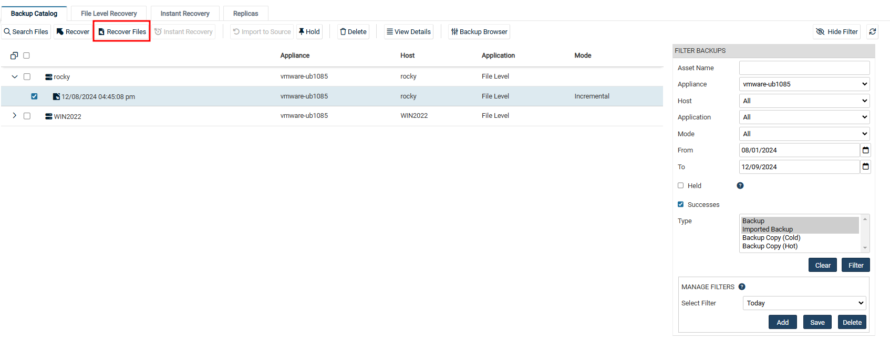
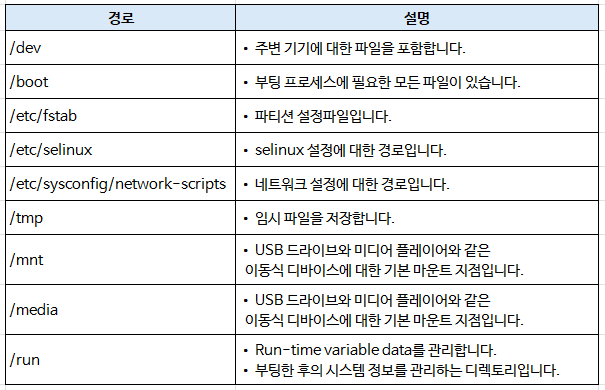

Linux 복구 방법#
※ Linux의 경우, Unitrends 어플라이언스에서 복구하려는 해당 Linux에 맞춰 BMR 부팅CD 제작을 지원하지 않기에 아래 단계로 Linux 복구를 진행해야 합니다.
1. 사전 필수요건#
복구 대상 서버에 복구하려는 Linux 대상서버와 동일하게 파티션을 구성하여 OS를 설치합니다.
복구 대상 서버에 Unitrends Agent 설치하여, Unitrends 어플라이언스에 등록합니다.
2. Linux 복구 단계#
위 ‘사전 필수요건’이 수행되었다는 가정하에 아래 단계가 진행됩니다.
(1) Recover → Backup Catalog의 오른쪽 FILTER BACKUPS를 사용하여 복구하고자 하는 기간을 지정합니다. 
(2) 복구할 대상 시스템을 확장하여 복구 시점(Recovery Points)을 선택합니다.
(3) 상단의 Recover Files 버튼을 클릭합니다.
(4) FILE Browser에서 아래 이미지의 영역은 복구에서 제외합니다.
버튼 : 특정 파일/폴더를 Inclusion 및 Exclusion에 포함
< 버튼 : 특정 파일/폴더를 Inclusion 및 Exclusion에 제외
<< 버튼 : 특정 파일/폴더를 Inclusion 및 Exclusion에 모두 제외 
(5) 복구할 파일 및 폴더의 적용이 완료되면 Next를 클릭합니다.
(6) 복구 옵션(RECOVERY OPTIONS)을 설정합니다.
[RESTORE TARGET]
Asset :
복구할 대상을 선택합니다.
기본값은 백업본 대상 서버입니다.
Directory :
복구 대상 서버에서 복구될 경로를 선택합니다.
기본값으로 선택하지 않으면 백업본의 위치 그대로 적용됩니다.
[EXCLUSIONS]
Exclusion Pattern :
제외할 파일의 패턴을 사용하여 추가합니다.
Exclusion List :
위에서 추가한 제외할 파일의 패턴 리스트가 나열됩니다.
[ADVANCED OPTIONS]
Commands to run pre-restore :
복구 전에 실행할 스크립트 혹은 명령어를 추가할 수 있습니다.
Commands to run post-restore :
복구 후에 실행할 스크립트 혹은 명령어를 추가할 수 있습니다.
[CHECKBOX]
기본적으로 체크되어 있는 옵션은 권장사항이므로 유지하는 것이 좋습니다.
Preserve Directory Structure : 원본 디렉토리 구조를 유지하여 복구합니다.(기본값)
Overwrite existing Files : 복구 경로에 동일한 파일이 있으면 덮어씁니다.(기본값)
Restore newer files only : 복구 경로에 동일한 파일이 있으면 해당 파일은 복구에서 스킵합니다.
Set file dates to today : 복구할 파일의 날짜를 오늘 날짜로 지정합니다.
UNIX text conversion : UNIX 운영체제로 복구할 시, text 변환을 수행합니다.(기본값)
(7) 설정을 마치면 Save를 클릭하여 복구를 시작합니다.